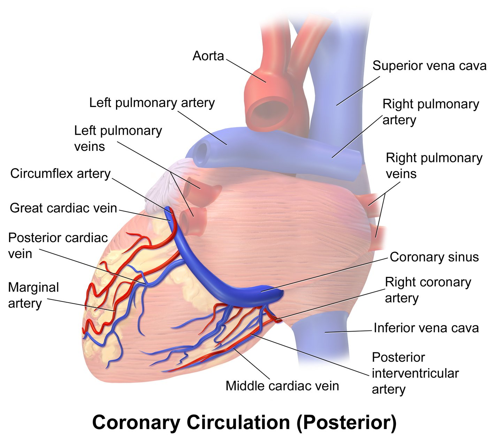
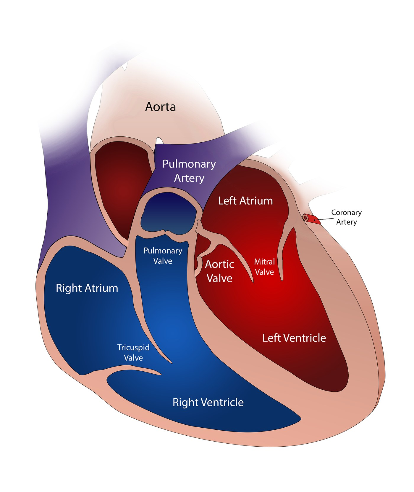
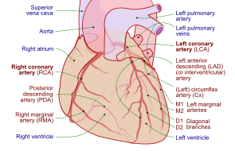

Anterior view of the coronary circulation showing left and right coronary arteries,
circumflex artery, anterior interventricular artery, marginal artery, and cardiac veins.
Coronary Circulation (Posterior)

Posterior view showing the right coronary artery, posterior interventricular artery,
coronary sinus, and cardiac veins.
Heart Cross-Section

Cross-sectional view of the heart showing the four chambers (right/left atrium,
right/left ventricle), four valves (tricuspid, pulmonary, mitral, aortic),
and the great vessels.
Coronary Arteries – Schematic

Schematic diagram of the coronary arteries including left main, LAD, circumflex,
and right coronary artery with their main branches.